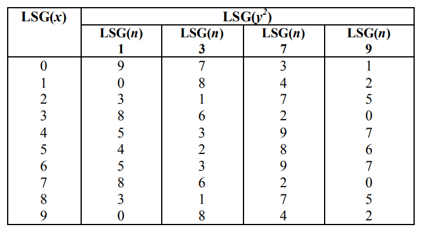
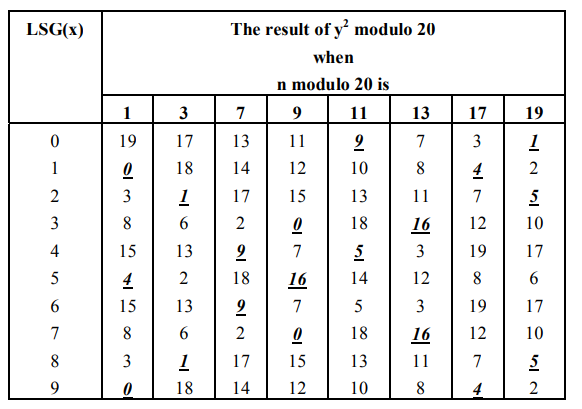
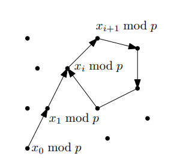

# RSA
RSA 算法的主要经过这样的一个过程：
选取两个素数 和，计算模数，并计算欧拉函数。选取一个公钥指数 满足，计算私钥（解密指数） 满足。销毁.
RSA 的公钥为，私钥为。
在加密时，对于明文，计算。在解密时，计算。
可以看出，，能够满足加解密一致性。
RSA 的安全性主要依赖于大整数分解的问题，也就是，在获取到公钥中的模数 的情况下，是很难分解 的模数，否则很容易计算出私钥，进而破解 RSA 体系。
# 分解？
# Fermat's Factorization Algorithm, FFA
费马分解法（Fermat's Factorization Algorithm）是一种常用的因数分解的算法。
# 常规的分解思路？
对于比较大的模数来说，直接进行暴力的分解算是非常低效的做法，基本上是不可能的。Fermat 分解是一种算是比较快的做法，当 的因数比较接近 的平方根时，可以较快实现分解。
我们注意到有，其中。
因为 的形式，那么，我们从 开始枚举，使得 为一个完全平方数，令，那么 就是对 的一个分解。
# FFA-1 | |
def ffa1(n): | |
a = math.ceil(gmpy2.iroot(n, 2)[0]) + 1 | |
while True: | |
b2 = a * a - n | |
b = int(gmpy2.iroot(b2， 2)[0]) | |
if b * b == b2: | |
return a + b, a - b | |
a += 1 |
用 Python 实现的话这里有一个小坑，math.sqrt 的精度是非常低的，这样子会导致 math.sqrt(n) 和 实际上相差了非常多，影响最终结果。这边直接用了 gmpy2 的函数，实际上手搓一个迭代法慢慢算应该也可以。
这种算法实际上需要 次迭代。不难想到基本不等式，当且仅当 时取等于号。上面的不等式符合基本不等式的形式，当 和 相近时，分解速度较快。
另一种思路是：，也就是，其中。我们可以枚举，使得，就能够实现对 的分解。
那怎么样去迭代？注意到有，我们枚举 的话，就要保证 和 都是整数，那么 的迭代步长就得是 2。那么 迭代的步长也就得是。合理。
那么，如果，我们增加，使得 减小趋近于 0，也就是。反之，如果，那么增加，使得 增加趋近于 0，也就是。
# FFA-2 | |
def ffa2(n): | |
u = 2 * gmpy2.iroot(n, 2)[0] | |
v = 0 | |
r = u * u - v * v - 4 * n | |
while r != 0: | |
if r > 0: | |
r -= 4 * v + 4 | |
v += 2 | |
else: | |
r += 4 * u + 4 | |
u += 2 | |
return (u + v) // 2, (u - v) // 2 |
这样子计算的次数大约是。
# MFFV2, MFFV3, MFFV4...
MFFV2 and MNQSV2: Improved Factorization Algorithms 给了一个优化的 Fermat 分解算法的思路，主要目的在于减少平方根计算的次数来优化运行时间。这个算法名字记为 MFFV2 (Modified Fermat Factorization Version 2)。
平方数的末位必定是 1, 4, 9, 6, 5, 0 ，如果一个数的个位不是这些数字则其必定不是完全平方数。在 FFA 中，如果 的个位不是这些数那么就不需要再开平方根了，这能够节约一定的计算量。
# MFFV2 | |
def mffv2(n): | |
a = math.ceil(gmpy2.iroot(n, 2)[0]) | |
while True: | |
b2 = a*a - n | |
if b2 % 10 in [1, 4, 9, 6, 5, 0]: | |
b = int(gmpy2.iroot(b2, 2)[0]) | |
if b * b == b2: | |
return a + b, a - b | |
a += 1 |
MFFV2 的循环次数相较于 MFF-1 并没有太多的改变，它的优化主要在于减少了平方根计算的次数。但是简单的利用个位判断减少的次数是有限的，还有更高的提升空间。
MFFV3 在 MFFV2 的基础上，可以利用 和 的最低位来计算 的低位，相应减少了计算量。表上面 就是。

# MFFV3 | |
table = { | |
1 : [0, 1, 4, 5, 6, 9], | |
3 : [2, 3, 7, 1], | |
7 : [0, 4, 6, 9], | |
9 : [0, 3, 4, 5, 7, 8] | |
} | |
def check_lsg(a, n): | |
return a in table[n] | |
def mffv3(n): | |
a = math.ceil(gmpy2.iroot(n, 2)[0]) | |
while True: | |
if check_lsg(a, n): | |
b2 = a * a - n | |
b = int(gmpy2.iroot(b2, 2)[0]) | |
if b * b == b2: | |
return a + b, a - b | |
a += 1 |
相较于 MFFV2，MFFV3 能够减少更多的平方根计算以加快速度。
MFFV4 在之前算法的基础上，通过 Y2MOD20 算法减少更多的计算次数。

图中加粗数字是需要计算平方根的情况。
代码又臭又长。
# MFFV4 | |
def changeX(x, N): | |
if N == 1: | |
while x % 10 not in [1, 5, 9]: | |
x += 1 | |
elif N == 3: | |
while x % 10 not in [2, 8]: | |
x += 1 | |
elif N == 7: | |
while x % 10 not in [4, 6]: | |
x += 1 | |
elif N == 9: | |
while x % 10 not in [3, 5, 7]: | |
x += 1 | |
elif N == 11: | |
while x % 10 not in [0, 4, 6]: | |
x += 1 | |
elif N == 13: | |
while x % 10 not in [3, 7]: | |
x += 1 | |
elif N == 17: | |
while x % 10 not in [1, 9]: | |
x += 1 | |
elif N == 19: | |
while x % 10 not in [0, 2, 8]: | |
x += 1 | |
return x | |
def mffv4(n): | |
x = math.ceil(gmpy2.iroot(n, 2)[0]) | |
n_mod20 = n % 20 | |
x = changeX(x, n_mod20) | |
y, status = gmpy2.iroot(x * x - n, 2) | |
while not status: | |
if n_mod20 == 1: | |
# LSG(x) is 1, 5, 9 | |
if x % 10 == 1: | |
x += 4 | |
elif x % 10 == 5: | |
x += 4 | |
else: | |
x += 2 | |
elif n_mod20 == 3: | |
# LSG(x) is 2, 8 | |
if x % 10 == 2: | |
x += 6 | |
else: | |
x += 4 | |
elif n_mod20 == 7: | |
# LSG(x) is 4, 6 | |
if x % 10 == 4: | |
x += 2 | |
else: | |
x += 8 | |
elif n_mod20 == 9: | |
# LSG(x) is 3, 5, 7 | |
if x % 10 == 3: | |
x += 2 | |
elif x % 10 == 5: | |
x += 2 | |
else: | |
x += 6 | |
elif n_mod20 == 11: | |
# LSG(x) is 0, 4 | |
if x % 10 == 0: | |
x += 4 | |
else: | |
x += 6 | |
elif n_mod20 == 13: | |
# LSG(x) is 3, 7 | |
if x % 10 == 3: | |
x += 4 | |
else: | |
x += 6 | |
elif n_mod20 == 17: | |
# LSG(x) is 1, 9 | |
if x % 10 == 1: | |
x += 8 | |
else: | |
x += 2 | |
else: | |
# n_mod 20 is 19 | |
# LSG(x) is 0, 2, 8 | |
if x % 10 == 0: | |
x += 2 | |
elif x % 10 == 2: | |
x += 6 | |
else: | |
x += 2 | |
y, status = gmpy2.iroot(x * x - n) | |
return x - y, x + y |
# 速度
$ python test_ffa_speed.py
########## FFA1 ##########
19260817
65537
cost time 3.4550750255584717s
##########################
########## FFA2 ##########
19260817
65537
cost time 2.782966136932373s
##########################
########## MFFV2 ##########
19260817
65537
cost time 3.328457832336426s
###########################
########## MFFV3 ##########
19260817
65537
cost time 3.467909812927246s
###########################
########## MFFV4 ##########
65537
19260817
cost time 0.9283456802368164s
###########################
用了一组不是太适合的数据，MFFV4 的提升还是比较明显的。因为数据问题，MFFV2 和 MFFV3 并没有相较于 FFA 表现出太多的提高。可行的情况下还是尽量用 MFFV4.
FFA 还有一些其他的变种算法，比如说 SFFA-X 之类的，主要的思路还是在于更加高效的寻找完全平方数，减少无意义的计算等。
# Pollard's p-1 Algorithm
Pollard's p-1 算法由 Pollard 在 1974 年提出，这个算法主要是利用群 的性质来寻找 的因子。
我们知道 Fermat 小定理：
为一个素数， 且，那么。
对于一个需要去分解的整数，如果存在一个素数 使得，那么。我们令，那么显然有。当然了，这里要去保证 和 互素。
接下来的问题就是，我们并不知道 具体是多少。如果我们直接穷举指数，也就是说我们计算，直到找到一个 使得，显然，这个时候。这样子确实能够计算出，但是需要经过的迭代次数会是非常巨大的。
实际上，并不一定需要去寻找一个确切的，只需要 就可以，如果 是一系列素数的乘积，是有挺大概率满足条件的。
算法步骤是这样的：
1、 选择一个上界，一般在 范围内。
2、计算：
3、选择一个在 到 之间的随机正整数。
4、计算，如果，到下一步，否则返回。
5、计算 和。
6、计算，如果，回到步骤一，增加。如果，回到步骤三修改，否则返回。
上界 会影响指数 的选取，增加上界可以提高算法找到分解的概率，但是相应的也会导致运行时间的增加。
def pollard_p_1(n, B=50000): | |
m = 1 | |
for p in range(B): | |
if isPrime(p): | |
m *= pow(p, int(math.log2(B) / math.log2(p))) | |
while True: | |
a = random.randint(1, n) | |
d = GCD(a, n) | |
if d != 1: | |
return d, n // d, "OK" | |
a_m = pow(a, m, n) | |
e = GCD(a_m - 1, n) | |
if e == 1: | |
return 1, n, "Failed! Please Increase B." | |
elif e == n: | |
continue | |
else: | |
return e, n // e, "OK" |
测试结果还行。
N = 0x808627ced38a980d765454ac5dfefc10195f6fef9b35b52b742dbce2419c34080a3ef3e9673fea4dd629ff382155031ea6dcba8372d42c1862f32b2bee47e157fa7150c544635035f366f7d68234f56fa24180eb6a00a0f85c65aaeb455b8ed28f2285376cda786f8c658cfeb3752f3504a7256ea3dbd22eef20267d156fab51 | |
pollard_p_1(N) | |
N = 0xd11b49bf43234d6595219ab7c21730de0a13a7a01e63831a4d4f8dc5a7e68fca0e9768ef0dabcad036e08e17e4b27c1151df364556d8f93d19565d9f40f095a49c6185f2630671eb5ec1eaa514bec32d93a0f0459b52f1e34d4b9113413403f66619262ef1d3cbb025648c997cd1438de21cfe4bea0c6e00c72ffde587929cb3 | |
pollard_p_1(N, 200000) | |
N = 0x8614c70089aade50e5a14de1fb8fcf0880046e9494eead3bf600ebe451e335b4c9e21de984912bca15914711a9c359056a2ad0543035e971a2faa387ea53aad48a7016735e2bb60716626cad6cf4f9cc41a59cf31ef07473a1de08a018cab7c6b95bf7ac9f501bd42fcc4c7cd834b6a7723b6abcc9a98146a750a9222cce2cc7 | |
pollard_p_1(N) | |
(1719620105458406433483340568317543019584575635895742560438771105058321655238562613083979651479555788009994557822024565226932906295208262756822275663694111, 52484065122572767557293534477361686456679280880304125291106733197354892893647364164212186415880889674435558369420400890814461263958618375991691022752189839, 'OK') | |
cost 0.8456954956054688s | |
(920724637201, 159482692259010816139523195494724350795654007589889398757383554027183924116413427533184220914037106543253535103452324841452565420868944985464229649420240708554088156331324206733727690785373464575525698274552058386560106163093965065830071277465943834308083708065429495092746028681968670036721164931, 'OK') | |
cost 7.483886957168579s | |
(1085663496559, 86725761611859895386396141031497189948984447138542215420462553101081991008304507461163078354877970282649251051457532902955009856009405853917396630017011320500357081664483071782135584899953560478866041032397335990722689211113937797406269980402604895207480485168493674422769645640726941944110986793, 'OK') | |
cost 0.8269166946411133s |
实际上如果观察运行的细节的话，实际上下面这个部分占据了比较多的运行时间：
for p in range(B): | |
if isPrime(p): | |
m *= pow(p, int(math.log2(B) / math.log2(p))) | |
N = 50000: cost 0.5885777473449707s | |
N = 100000: cost 2.127704381942749s | |
N = 200000: cost 6.38098669052124s |
这一部分如果采用素数筛法、较快的概率性素性检测、快速幂的话，可以降低一定的运行时间。此外，也可以通过预先建表等方式，避免重复计算，可以显著降低运行时间。
有一种简化的思路是简化 m 的计算：
def pollard_p_1(n: int): | |
a = 2 | |
k = 1 | |
while k <= 200000: | |
a = pow(a, k, n) | |
p = GCD(a - 1, n) | |
if 1 < p < n: | |
q = n // p | |
return p, q | |
k += 1 | |
return None, None |
这样直接穷举幂次，可以避免计算 m 的过程，但是实际上可能会影响程序的可靠性。速度上实际也不如优化过的常规方法。
前面提到的 FFA 主要用于 的模数 相近的情况，而显然的，Pollard's p-1 适用于不同的情况。下面来看：
一个整数 是 x - 光滑（x-smooth）的，当且仅当 的所有素因子都小于等于。
这样子，上界为 b 的 Pollard's p-1 算法能够成功找到 的因子 当且仅当 是 b-smooth 的。显然的，我们计算的 为小于上界 的素数的幂的积，Pollard's p-1 成功的条件是，如果 是 B-smooth 的，那么 里面所有的因子都在 里面，并且幂次也会小于在 中的幂次，那么 Pollard's p-1 一定成功。
当然，这些的前提条件在于 是 b-smooth 的。因为 是有限的，那么肯定存在一个足够大的 满足条件，但是这样会带来巨大的性能损失，以至于算法并不会优于试除法。
简单的说，Pollard's p-1 适用于 的因子都很小的情况。
# Pollard's rho Algorithm
太混沌了，太混沌了……
Pollard's rho 算法是 Pollard 在 1975 年在 A Monte Carlo method for factorization 中提出的算法。
我们需要分解的整数为。我们采用一个 形式的递推式来生成一个伪随机数序列，计算，判断 是否满足，如果是，则找到了一个对 的分解。
计算 接着计算 实际上和独立计算 i 个 是一样的，这样的目的是为了节省 复杂度的 GCD 的计算开销。
那么问题在于为什么使用 这种形式。
我们可以看一种简单粗暴的做法：
def factorize(n): | |
if isPrime(n): | |
return 1, n | |
while True: | |
r = random.randint(2, n - 1) | |
x = gcd(r, n) | |
if x != 1: | |
return x, n // x |
这样子确实能够分解 n，但是存在的一个问题是，经过一定次数的迭代之后，有比较大的概率会生成两个一样的随机数，考虑到生日悖论，这概率还并不低，这会导致实际上的效果并不如朴素的试除法。
在 Pollard's rho 算法中，计算了，其中 的取值必定是有限的，随着迭代，它迟早会出现循环。这里判断循环的方法是 Floyd 判环法。注意到我们计算了，每一次迭代， 都比 多走一步，就像跑一千米被别人套圈一样，在循环中最后必定会超过 一圈，也就是会出现，这个时候停止迭代。
所以说为什么 Pollard's rho 算法叫做 算法？看一下迭代的过程中间画的图就是：

直接拿代码吧：
def pollard_rho(n): | |
if isPrime(n): | |
return n | |
while True: | |
x = 0 | |
y = 0 | |
c = random.randint(2, n - 1) | |
f = lambda x: (pow(x, 2) + c) % n | |
x = f(x) | |
y = f(f(y)) | |
while x != y: | |
d = gcd(abs(x - y), n) | |
if 1 < d < n: | |
return d, n // d | |
x = f(x) | |
y = f(f(y)) |
不过这种算法似乎在分解 RSA 模数的情境下表现并不是十分出色。
# Williams' p+1
对于 仅有比较小的模数的情况，Williams' p+1 算法是一种可行的方法。这个方法整体的过程和 Pollard's p+1 算法还挺类似的。
Pollard's p-1 算法前面先计算了
一种思路是采用 Lucas 序列来计算这个步骤。
# Lucas 序列
给出 Lucas 函数的定义：
为整数， 为 的零元，定义 Lucas 函数（Lucas Function）：
另记.
通过 等置换可以得到：
如果，并且，那么有，，因此有：
以及这样的性质：
引理：
对于奇素数， 且记 Legendre 符号，有：
# 算法
我们要求 是 的一个模数，并且：
其中 是满足 的第 个因子，和前面 Pollard's p-1 类似。明显的，对于，有.
此外，根据 Lucas 序列的性质（引理），如果 并且 Legendre 符号，那么，也就是.
这样子需要解决的问题就是如何去寻找。前面提及的 Lucas 序列的性质可以实现：
这样子的问题在于，经过一定次数的迭代之后，数据会变得异常的大（其实 Pollard's p-1 也遇到了一样的问题……）
我们注意到，如果，那么根据，显然有，不失一般性的，我们假设，那么。这样，又有。
也就是说，如果，那么。
Williams' p+1 算法的第一步是这样的：
令，找到一个满足 的。定义，.
明显有，接下来就可以计算 实现分解。
利用前面 Lucas 序列的性质，我们可以通过这样的方式来计算：
当，同时有
如果，那么还有这样的式子：
结合上面的式子，我们可以完成对序列 的计算。
感觉太复杂了 x
实际上除了这些还有筛法等更加高效的算法，不过暂时还没懂所以说之后再写……
# RSA 共模攻击 (RSA Commom Modulus Attack)
考虑这样子的一个情况：
一个发送者使用了自己的模数，但是不同的公钥指数，同时有。这样子，我们得到：
因为上面有，那么由 exgcd 算法可以知道存在整数 使得，这样子有。
完事，这个简单。
# 小公钥指数攻击 (RSA Low Public Exponent Attack)
如果 RSA 的公钥指数 比较小的话（并且截获了多段明文），是可以利用中国剩余定理实现小公钥指数攻击。
# 中国剩余定理（CRT）
中国剩余定理是用来求解一次同余方程组的算法。
中国剩余定理：
正整数 两两互素，对于任 个整数，同余方程组：必定有解且唯一，解为:
其中.
证明分为两个部分，第一部分证明解 的正确性。
因为 两两互素，所以必定有，也就是 一定是存在的。，那么
显然满足解的正确性。
接下来第二部分证明解的唯一性。假设存在两个解，那么必定有，而 两两互素，有，那么明显有，也就证明了解的唯一性。
# 攻击实现
如果一个攻击者连续使用不同的模数 和公钥指数 加密一系列相同的明文 得到密文，同时公钥指数 并不大（）。
这样就会满足使用小公钥指数攻击的条件，我们注意到加密的结果满足：
令，我们可以使用中国剩余定理求解出，接下来直接对 开 次根号就可以求解。
一个特殊的情况在于，如果 非常小，同时 远小于，可以令，穷举 k 求解。
# 总结（？）
这边也就是几种特别常见的简单的方法，还有像 CopperSmith 这样的暂时还没懂所以说还要再看论文……
就这些也折腾了好久啊，也看了好几篇原论文（有啥用……）
# 参考资料
[1] K. Somsuk and S. Kasemvilas, "MFFV2 and MNQSV2: Improved Factorization Algorithms," 2013 International Conference on Information Science and Applications (ICISA), 2013, pp. 1-3, doi: 10.1109/ICISA.2013.6579415.
[2] K. Somsuk, "A new modified integer factorization algorithm using integer modulo 20's technique," 2014 International Computer Science and Engineering Conference (ICSEC), 2014, pp. 312-316, doi: 10.1109/ICSEC.2014.6978214.
[3] Williams, H. C. “A Method of Factoring.” Mathematics of Computation, vol. 39, no. 159, American Mathematical Society, 1982, pp. 225–34, https://doi.org/10.2307/2007633.
[4] Pollard, J. M. (1975). "A Monte Carlo method for factorization". BIT Numerical Mathematics. 15 (3): 331–334. doi:10.1007/bf01933667.